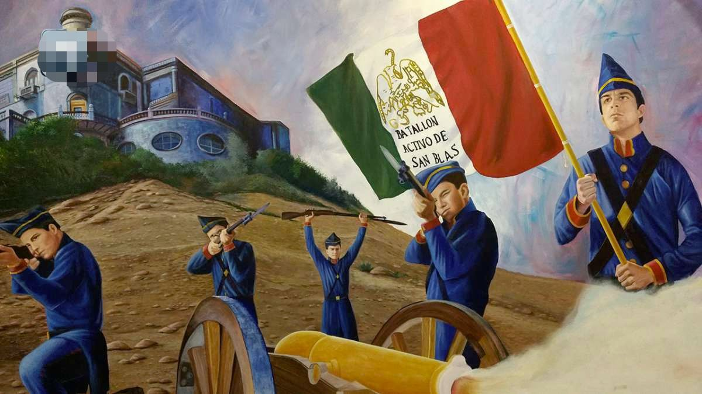
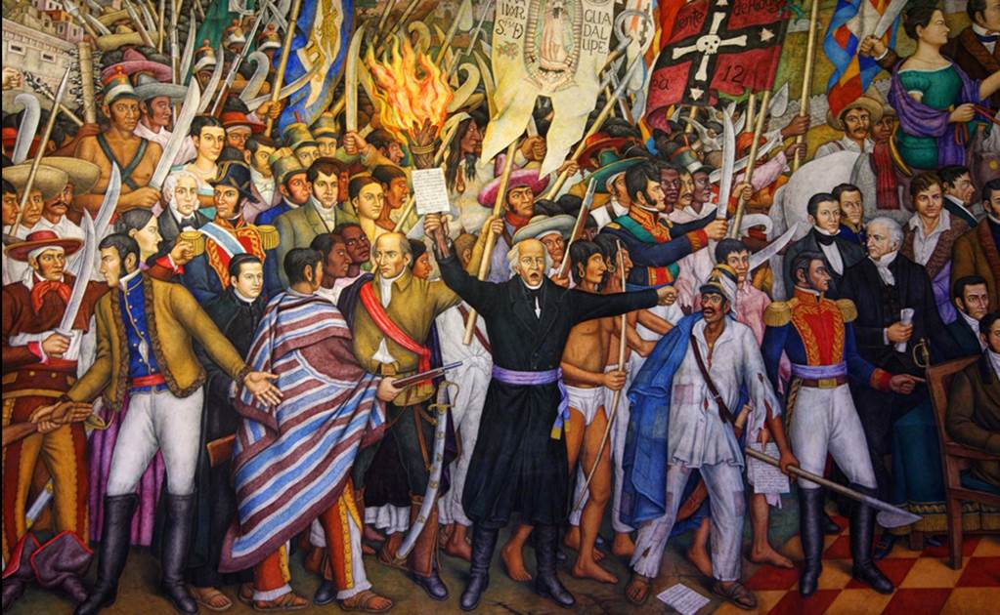
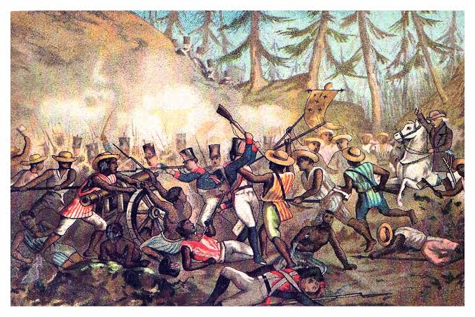

13 de Septiembre
1847Batalla de Chapultepec. Conmemoración de la gesta heroica de los Niños Héroes en la defensa del Castillo frente al ejército estadounidense

15 de Septiembre
1810El Grito de Dolores. Conmemoración de la víspera donde el presidente, gobernadores y alcaldes recrean el llamado a la libertad desde los balcones oficiales.

16 de Septiembre
1810Inicio de la Guerra de Independencia. Fecha oficial del levantamiento armado liderado por el cura Miguel Hidalgo en Dolores, Guanajuato.

27 de Septiembre
1821Consumación de la Independencia. Entrada triunfal del Ejército Trigarante a la Ciudad de México, encabezado por Agustín de Iturbide y Vicente Guerrero, tras 11 años de lucha.